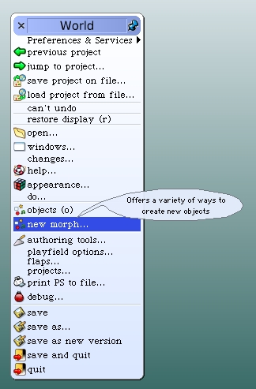
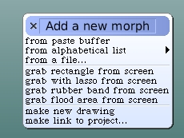
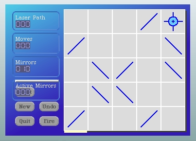
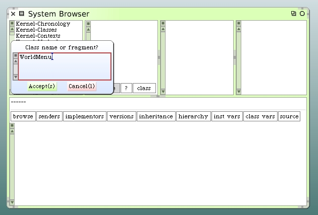
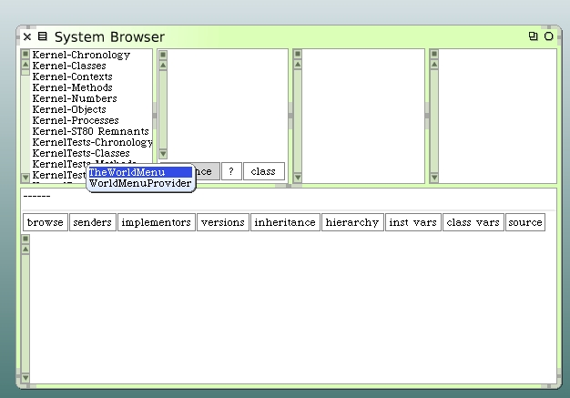
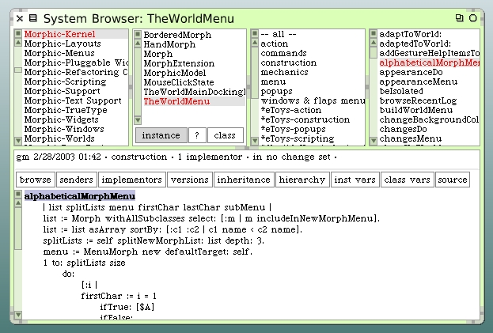

Fix Size Of Default LaserGame Morph
If you open up a LaserGame morph from the standard menu "from alphabetical list"...
 Find the LaserGame morph in the alphabetical list (under L, of course). The default sized morph is too small.
The height of our game morph is not enough to support all the goodies we have in our control panel. Control panel counters and buttons are overlapped. Besides, the board is really too small and needs more cells to make it interesting. So let's fix that.
It's a worthwhile journey to conduct a directed exploration into how this works in Squeak. We'll discover how the game morph is getting launched and how to change its size. So where do we begin? That first menu is known as the World Menu. Open up a class hierarchy browser and with your mouse over the system categories pane, type a Command-F. This pops up a class find dialog.
Type "WorldMenu" in the dialog and click on the "Accept" button. Squeak will find two classes that contain "WorldMenu".
Click on "TheWorldMenu" and Squeak will find TheWorldMenu class in your class browser.

There's an instance method named #alphabeticalMorphMenu. Here's the method contents.
alphabeticalMorphMenu
| list splitLists menu firstChar lastChar subMenu |
list := Morph withAllSubclasses select: [:m | m includeInNewMorphMenu].
list := list asArray sortBy: [:c1 :c2 | c1 name < c2 name].
splitLists := self splitNewMorphList: list depth: 3.
menu := MenuMorph new defaultTarget: self.
1 to: splitLists size
do:
[:i |
firstChar := i = 1
ifTrue: [$A]
ifFalse:
[((splitLists at: i - 1) last name first asInteger + 1)
asCharacter].
lastChar := i = splitLists size
ifTrue: [$Z]
ifFalse: [(splitLists at: i) last name first].
subMenu := MenuMorph new.
(splitLists at: i) do:
[:cl |
subMenu
add: cl name
target: self
selector: #newMorphOfClass:event:
argument: cl].
menu add: firstChar asString , ' - ' , lastChar asString subMenu: subMenu].
^menu
If you examine this code carefully you will find there's an instance method that is defined as the selector for the operation that gets performed when someone chooses a morph from the alphabetical menu. That method is #newMorphOfClass:event:.